[HI]Back fill current ICU numbers from the lt. governor's Instagram page
State or US: Hawaii
Describe the problem This data point is only reported on Instagram. We should back-fill from there
Link to data source 8/4 HOSP 138 ICU 15 VENT 10 8/3 HOSP 75 ICU 15 VENT 10 8/2 HOSP 75 ICU 15 VENT 10 7/31 HOSP 65 ICU 14 VENT 10 7/30 HOSP 61 ICU 11 VENT 9 https://www.instagram.com/p/CDX-wtKjo1v/?igshid=1ux0dry15wg4y
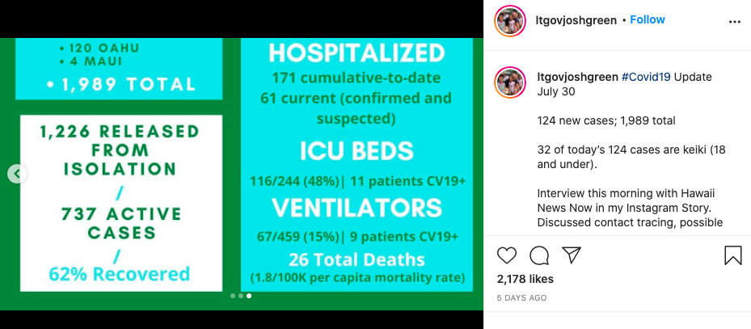 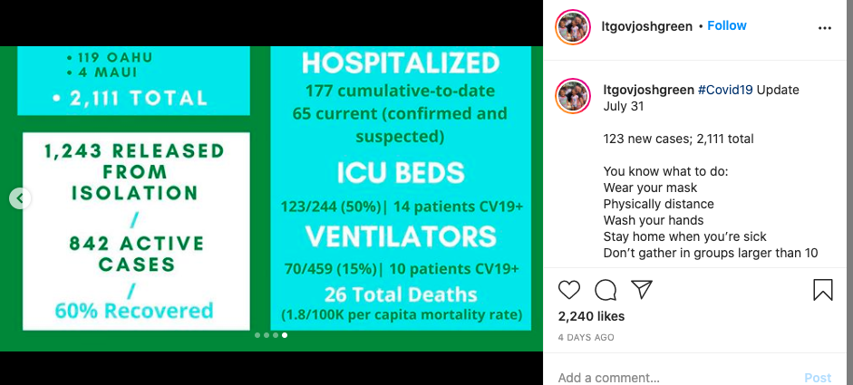 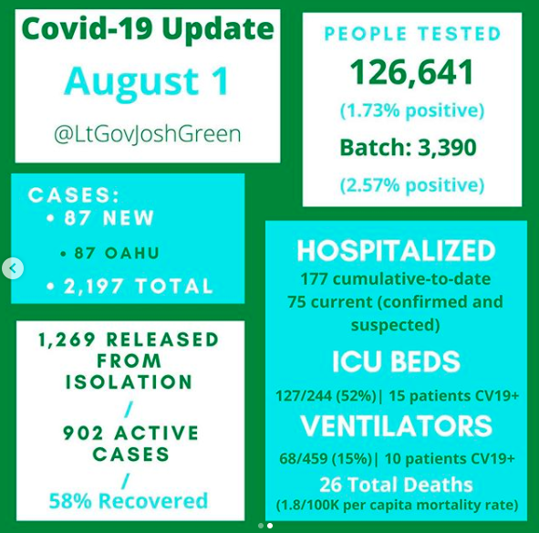 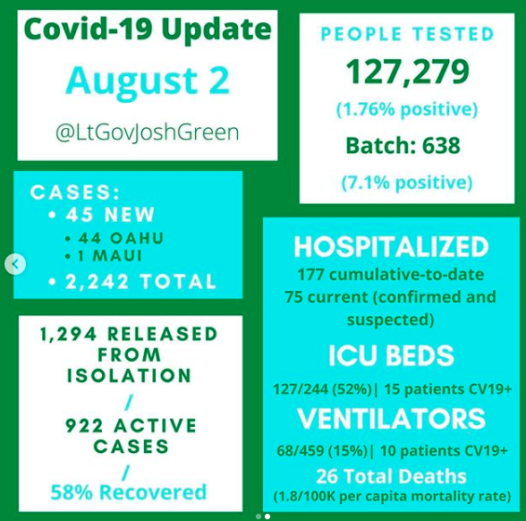 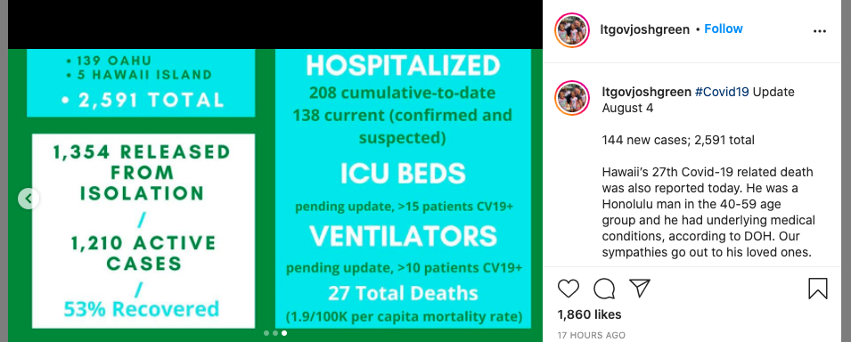
Comments
the-daniel-lin commented on August 6, 2020 at 9:01 am
The data was released on Instagram after our publish shift time, so backfilling 8/5 hospitalization numbers with:
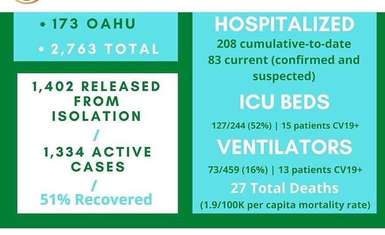
BEFORE:
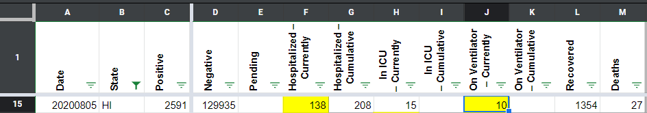
AFTER:
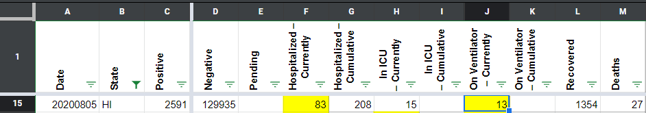
the-daniel-lin commented on August 6, 2020 at 1:47 pm
Changed in WS2 as well
BEFORE:
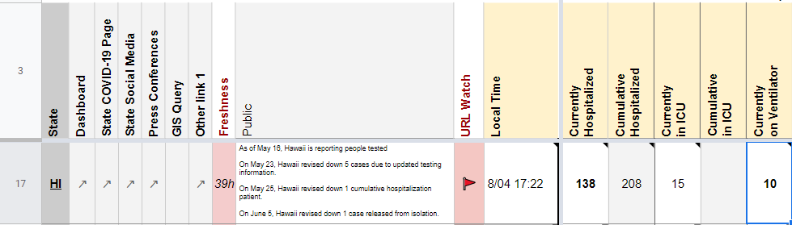
AFTER:
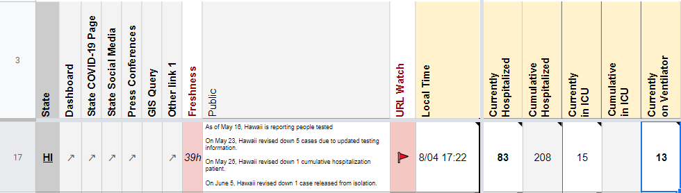
muamichali commented on August 9, 2020 at 2:57 pm
I am closing this @the-daniel-lin
BEFORE 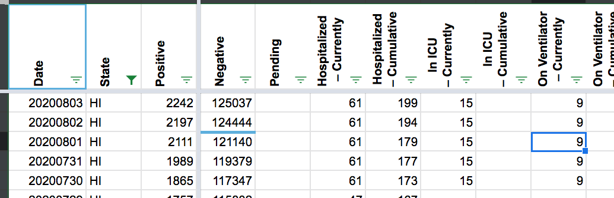
AFTER 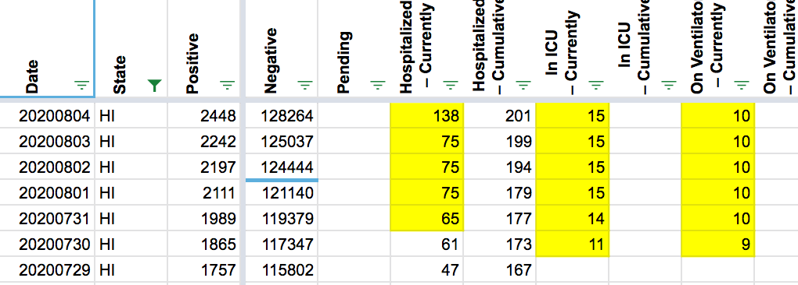